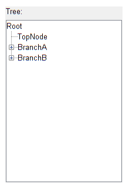
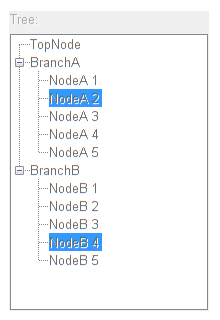
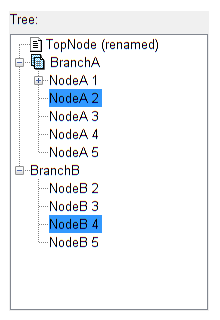

Tree
Contents
Create the widget
f = figure(...
'Toolbar','none',...
'MenuBar','none',...
'NumberTitle','off',...
'Units','pixels',...
'Position',[100 100 220 320]);
movegui(f,[100 -100])
w = uiw.widget.Tree(...
'Parent',f,...
'SelectionChangeFcn',@(h,e)disp(e),...
'Label','Tree:', ...
'LabelLocation','top',...
'LabelHeight',18,...
'Units', 'pixels', ...
'Position', [10 10 200 300]);
topNode = uiw.widget.TreeNode('Name','TopNode','Parent',w.Root);
branchA = uiw.widget.TreeNode('Name','BranchA','Parent',w.Root);
branchB = uiw.widget.TreeNode('Name','BranchB','Parent',w.Root);
for idx = 1:5
nodesA(idx) = uiw.widget.TreeNode('Name',sprintf('NodeA %d',idx),'Parent',branchA);
nodesB(idx) = uiw.widget.TreeNode('Name',sprintf('NodeB %d',idx),'Parent',branchB);
end

Expand branches
branchA.expand();
branchB.expand();
Hide the root
w.RootVisible = false;
Change selection mode
w.SelectionType = 'discontiguous';
w.SelectionChangeFcn = @(h,e)disp({h.SelectedNodes.Name}');
Select nodes programmatically
w.SelectedNodes = [nodesA(2) nodesB(4)];
Toggle Enable
w.Enable = 'off';

Toggle Enable back on
w.Enable = 'on';

Change some node properties
topNode.Name = 'TopNode (renamed)';
branchIcon = fullfile(matlabroot,'toolbox','matlab','icons','pagesicon.gif');
nodeIcon = fullfile(matlabroot,'toolbox','matlab','icons','pageicon.gif');
setIcon(branchA,branchIcon);
setIcon(topNode,nodeIcon);
Allow interactively renaming a node
Relocate nodes
nodesB(1).Parent = nodesA(1);
Add context menus
treeContextMenu = uicontextmenu('Parent',f);
uimenu(treeContextMenu,'Label','Refresh');
set(w,'UIContextMenu',treeContextMenu)
nodesAContextMenu = uicontextmenu('Parent',f);
uimenu(nodesAContextMenu,'Label','Node1');
set(nodesA,'UIContextMenu',nodesAContextMenu)

Drag and drop support
w.DndEnabled = true;
w.NodeDraggedCallback = @(h,e)dragDropCallback(h,e);
w.NodeDroppedCallback = @(h,e)dragDropCallback(h,e);
function dropOk = dragDropCallback(h,e)
doDrop = ~(nargout);
srcNode = e.Source;
dstNode = e.Target;
if ~doDrop
dropOk = true;
elseif strcmpi(e.DropAction,'move')
srcNode.Parent = [];
dstLevelNodes = [dstNode.Parent.Children];
dstIndex = find(dstLevelNodes == dstNode);
dstLevelNodes = [dstLevelNodes(1:(dstIndex-1)) srcNode dstLevelNodes(dstIndex:end)];
for idx = 1:numel(dstLevelNodes)
dstLevelNodes(idx).Parent = dstNode.Parent;
end
end
end